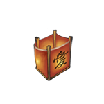
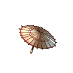

Получено: файл; исходный URL. Иллюстрация «Японская коллекция» из каталога ViveR_9, сопоставлена по точному названию; возможны отличия версий. Оригинальный файл без перекодирования; авторство отдельно не установлено. Страница: источник.

Японская коллекция
Браузерная социальная версия; историческая статья; дата редакции неизвестна- Тип
- Коллекции
- Версия и дата
- Браузерная социальная версия; историческая статья; дата редакции неизвестна
Элементы коллекции







Данные по источнику · Браузерная социальная версия · историческая статья; дата редакции неизвестна
Предварительно: один материал, требуется сверка. Требуется сверка.
- Состав (источник Zombie-island)
- Веер; Фонарик; Сакура; Солнце; Японский зонт.
- Награда (источник Zombie-island)
- 1 Лепестки розы; 500 Опыт.
- Где копать Японскую коллекцию в Зомби Ферме лопатами
- Зеленая беседка; Японская беседка; Каменная Е; Плюшевая Е.
- Японскую коллекцию можно выиграть в рулетке
- Лимонный автомат.
- Японская коллекция есть в ценностях и сокровищах
- Сундук Чудовища 3; Коллекционер 2; Сюрприз бригады; Сундук Лимона; Вишнёвый сюрприз; Гламурный Подарок; Гламурный подарок; Сундук от Бабушкиного ковра; Цирковой шатер; Новогодняя елка за дубл; Новогодняя елка за зб; Биг-бен; Осенний сюрприз 4.
- Участвует в создании Изумрудной в Планетарии
- Изумрудная коллекция.
- Японскую коллекцию можно создать в Планетарии
- Веер; Лиловый шар; Бозон Хиггса; Планетарий; Фонарик; Магнит; Сакура; Миелофон; Солнце; Сфера; Японский зонт; Кубик Рубика.
- Японская попадается при колдовании Палочками
- Палочка-выручалочка.
- Японскую коллекцию можно привезти с пиратских островов
- Пиратский сундук.
Данные по источнику · ВКонтакте, ZombieS Forever · дата редакции не установлена
Предварительно: Историческая фанатская страница; независимость от других источников не установлена. Возможны различия версий и дат.. Требуется сверка.
- Награда по ZombieS Forever
- 500 опыта и лепестки роз
- Места получения: выборка из источника
- Плюшевая буква «Е».
Данные по источнику · браузерная версия; платформа не указана · дата редакции не установлена
Предварительно: Содержимое списка: изображения и колонки могут терять смысл при извлечении текста; отдельная страница и дата не проверены. Подписи alt иногда ошибочны.. Требуется сверка.
- Текст карточки из каталога
- 500 опыта и Лепестки розы Веер Фонарик Сакура Солнце Японский зонт Где копать: Под плюшевой или каменной буквой "Е", Японская беседка, Флаг Марафонца, Марафонец
Данные по источнику · браузерная версия; на сайте указана игра ВКонтакте · дата редакции не установлена
Предварительно: Исторический текст; сильно совпадает со справкой Zommbie.at.ua, независимость не доказана. Отрицания и доступность могут измениться с патчем.. Требуется сверка.
- Где искать по странице «Зомбастики»
- Под буквами Е из декора — плюшевой и каменной. На странице над этой строкой картинка с именем файла «adskaya»; подпись и изображение не совпадают.
Данные по источнику · историческая браузерная версия, платформа не указана · 10.01.2014 — дата в каталоге; дата редакции материала неизвестна
Предварительно: Фанатский список без вероятностей и уточнения площадки; независимость от других источников не установлена.. Требуется сверка.
- Где искать по списку сайта
- Под буквами Е из декора (плюшевой и каменной)
- Оговорка
- Список может относиться к разным условиям, инструментам и периодам игры; не доказывает гарантированное выпадение. Заявления «только» и «невозможно» относятся лишь к времени и версии источника.
Данные по источнику · историческая браузерная игра; площадка не уточнена · 08.10.2017 — дата каталога; редакция неизвестна
Предварительно: Проверен текст в каталоге сайта; вероятность выпадения не указана. Исторические версии и даты могут различаться; списки и награды требуют сверки, независимость сайта от других справочников не установлена.. Требуется сверка.
- Награда в источнике
- Лепестки роз и 500 опыта
- Места в источнике
- Зелёная и японская беседки, каменная и плюшевая буквы Е, вишнёвый сад.
Связанные сущности
нет проверенных связей — требуется сверка.
Источники
- прочитано: Zombie-island.moy.su; проверка 2026-11-21
- Прочитана статья или строка таблицы; требуется сверка
- ZOMBIA: прочитана карточка в списке
- Ссылка на отдельную страницу; отдельно не проверена
- Зомбастики: прочитана соответствующая строка; возможная копия другого справочника
- ViveR_9: изображение в каталоге коллекций; совпадение названия
- zommbie.at.ua: где искать коллекции
- zombi-ferma.ucoz.net: каталог коллекций